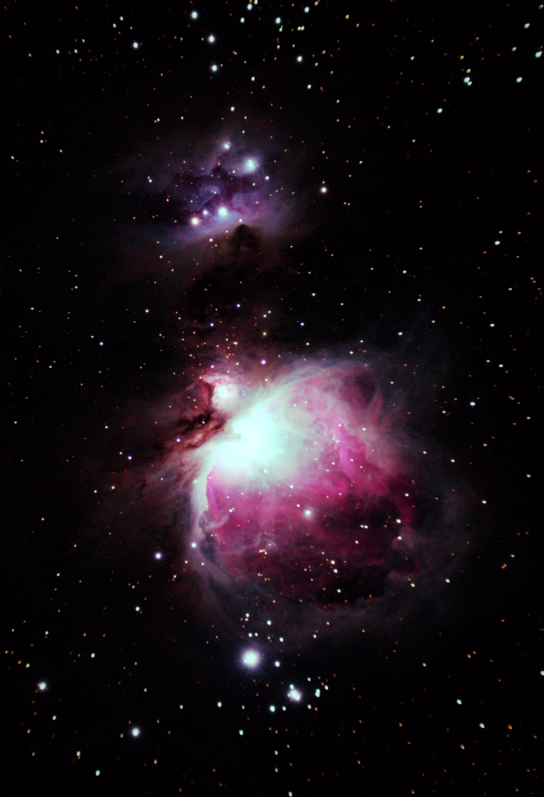
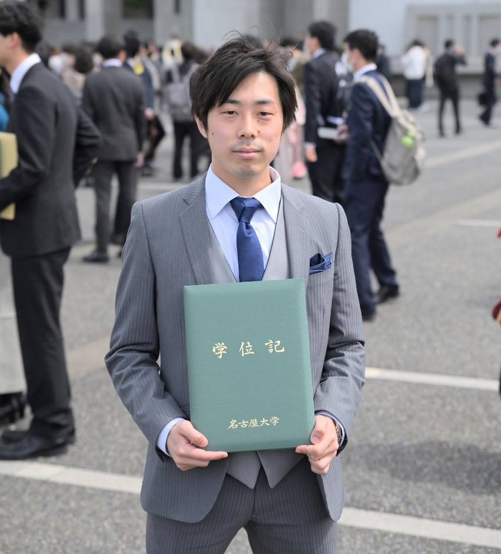
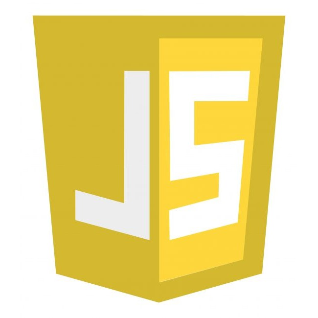

このWebサイトについて.
About this Web-site.
このサイトは, わたくし@ximu_astroの個人用ページとして作成しました. 最近のイベントなどについての紹介と感想, また物理学の備忘録や過去に撮影した天体写真ギャラリー等も用意していきます. 所謂, 多趣味な私ですが, どこかの誰かにとって見てもらえるような内容にしたいと思ってます.

直近のニュース.
Latest news.
| 3月27日 |
名古屋大学卒業式名古屋大学工学部物理工学科を卒業しました. せわしなくも充実した4年間だったと思います. また, ここまで支えていただいた方々に深く感謝を申し上げます.  |
|---|---|
| 3月16日 |
卒業論文が書き終わりました半年間続けてきた卒業研究が, 卒論としてまとまり, 無事提出できました. 個人的な感想として, 学びはしたが結果がない, という点で悔いが残ります. 
|
| 3月9日 |
第24回数物セミナー合同合宿開催地は静岡県御殿場青少年交流の家, 参加者は150人と大人数で, 皆がそれぞれ違う学問対象に興味があり, お互いの知識を深め合えました. 
|
自己紹介.
About myself.
細木 雄登 (Hosogi Yuto)
年齢：22
出身：高知県
現在：愛知県
大学：
名古屋大学大学院工学研究科博士前期課程1年
応用物理学専攻物性基礎工学研究グループ所属
所属サークル：
名古屋大学天体研究会(NuASA)
趣味：
天体観測, ルービックキューブ, 読書, 散歩, 鉛筆画, 気象, 地質.etc
生まれてからの略歴 ▼
保育園：
3歳ころで時計が読めるようになったらしく, 親も驚いていた.
このころから手先が器用で泥団子つくりやブロックで遊んでいた.
小学校：
低学年のうちは, 運動が人より劣ってできなかったが, 勉強面,
特に数学では中学校の内容まで学習を進めていた. 小学校4年のとき数学検定準二級(高校1年程度)を受験し合格.
このころから運動も得意になり, 市の陸上記録会では3種目において入賞した.
中学校：
部活は陸上部に所属し, 地区大会等で入賞する成績を収めた. 3年次には陸上部の主将になり,
後輩たちの指導や, 練習メニューの作成に日々尽力した. また, 中学校時代の学習面では,
定期試験において常に学年3番以内をキープし, 県内模試での1位を数度経験した. 高校受験では,
県内で最も偏差値の高い私立高校を受験し, 編入生主席で入学できた. また,
中学の生徒会っで副会長を務め, より良い学校づくりのために教員や市の教育委員会と連絡を取り合い,
問題点の改善や体育祭・文化祭の実行に携わった.
高校：
高校は自宅から片道1時間半かかる距離にあったため, 部活入部を断念.
朝は5時前に起床し, 6時前の電車で3年間通学した.
高校は県内でもトップの進学校であったが, 勉学に励み学年順位10番以内を維持した.
運動会や修学旅行では実行委員を務め, 同期のみんなと協力する精神を学んだ. この経験で,
コミュニケーション能力や物事に取り組む姿勢ができたと感じている.
大学：
名古屋大学工学部物理工学科に入学. サークルは天体研究会に所属し,
1年次から役職持ちになれた. 学習面では学科次席で卒業することができるほど,
熱心に勉学に励んだ. また, 学科では扱われない別分野への興味もあって,
自主的な勉学にも力を入れて取り組んだ.
2年次からはコロナの影響で身の回りのほとんどがオンライン化し,
人と関わる機会が極端に減少した. このときから, 私は,
オンラインコミュニケーションツールを活用した全国規模の交流の場をいくつか立ち上げたり,
運営したりすることにかかわるようになった. 現在では, コロナ規制緩和に伴って,
オンラインのときに作った交流関係を対面でつなげることができるようなイベントができないか,
日々考えている.
物理学の経験分野

力学

電磁気学

解析力学

熱力学

統計力学

量子力学

流体力学

特殊相対論

一般相対論

場の量子論

物性物理学

宇宙物理学
プログラミング経験
Python
C++
HTML
CSS

javascript
Julia
Fortran
研究室アクセス
〒464-8603
愛知県名古屋市千種区不老町 名古屋大学 工学部 3号館